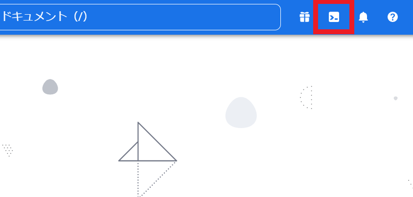

大手 3社のクラウドにて同じことをやっています。 宜しければご覧ください 👀✨
【AWS EC2】 CLI で Web サーバ(NGINX)を構築してみた
【Azure】 CLI で Web サーバ(NGINX)を構築してみた
目次
やること
- Google Cloud 上で Ubuntu の VM を立てる
- VM に NGINX をインストールし、Web サーバとして設定
- OS 起動時に NGINX が自動起動するように設定
- AccessLog が記録されていることを確認
- HTTP Status Code: 200 が返ることを確認
- VM を削除する
これを CLI でやるときの手順を以下に記載していきます。
インスタンス 構築手順
-
Google Cloud メイン画面 右上のターミナルマークをクリックして Cloud Shell を開く 
-
インスタンスを新規作成し、VM を起動する
$ gcloud compute instances create text-instance01 --image-family=ubuntu-2204-lts --image-project=ubuntu-os-cloud --zone=us-central1-a --tags=http-server今回の設定項目は以下の通り。
- インスタンス名
- OS イメージ（Ubuntu）
- サーバの場所
- HTTP トラフィックの許可
image-family,image-projectの値は$ gcloud compute images listから選べる
-
インスタンスが立っているかの確認は以下のコマンドで行う
$ gcloud compute instances listこれを実行することで、現在立てられているインスタンスの情報を表示することができる
NGINX による Web サーバ構築設定手順
-
SSH で VM に接続
$ gcloud compute ssh --zone "us-central1-a" "text-instance01" --project "awesome-aurora-362109"以降、VM での操作。
-
VM に NGINX インストール
$ sudo apt-get update $ sudo apt-get install nginx
-
NGINX 自動起動設定
$ sudo systemctl enable nginx.service
-
VM 再起動
$ sudo reboot
-
VM 再起動により接続が切れるので、SSH 再接続
$ gcloud compute ssh --zone "us-central1-a" "text-instance01" --project "awesome-aurora-362109"
-
NGINX が自動起動していることを確認
$ systemctl status nginx.service→
Active: active (running)という文面が確認できればOK
HTTP Status Code の確認方法
- HTTP Status をリモートで確認（今回は自 PC の bash から確認した）
→ 値が返ってくるので以下が確認できればOK$ curl -v [外部IP]< HTTP/1.1 200 OK
AccessLog の確認方法
-
NGINX の設定ファイルの中身を表示し、AccessLog ファイルの位置を調べる
$ cat /etc/nginx/nginx.confファイル内の以下の文面から確認
## # Logging Settings ## access_log /var/log/nginx/access.log;
-
AccessLog ファイルを確認
cat /var/log/nginx/access.logサーバにアクセスした履歴が残っていることを確認
インスタンス 削除手順
-
インスタンス削除
$ gcloud compute instances delete [instance name] –zone=[zone name]
-
インスタンスの状況一覧を表示させ、インスタンスが削除されていることを確認する
$ gcloud compute instances list→ 削除したインスタンスが表示されていなければ OK
まとめ・感想
クラウド CLI での Web サーバ構築第三弾として、Google Cloud Compute Engine での手順をまとめました。
ここからは各社クラウドを触った感想をつらつら書いていきます～。完全雑談です。
☁☁☁
AWS が一番シェア率が高いそうなのですが、個人的には Azure や Google Cloud と比較して1番難しかったです…。
その理由として、「カスタムの多さ」と「公式ドキュメントの分かりにくさ」の2点を挙げたいと思います。
AWS は細かい設定まで可能で自由度の高い印象で、おそらくクラウドベテランで慣れてらっしゃる方ならむしろこの点は魅力なのではないかと思います。
しかし私のようなクラウド超初心者には逆に設定の多さに困惑してしまうことが多々ありました。
これにより、「公式ドキュメントが分かりにくい」にも繋がってしまっていると思います。
今回の勉強で調べ物をするにあたり、原則公式ドキュメントを参照しておりました。
個人の Web サイトは分かりやすくまとめられていることが多く、今まで何度もお世話になっているのですが、公式が出しているものはやはり一番信頼できる情報なので、ここから読み取れるのがベストだと考えました。
（特に AWS は CLI のバージョンが 1から 2へ変わっているので、情報が古い個人サイトも多々あります。）
今回使用した IaaS の VM 関連サービスの公式ドキュメント(CLI)をピックアップしてみるとこんな感じです。
AWS EC2
Azure Virtual Machines
Google Cloud Compute Engine
AWS はひたすらコマンドが箇条書きで羅列されています。
「VM 立ててみるぞ～！コマンドは create とかかなぁ？」と調べてみても create から始まるコマンドが何十個もあって…。
結構「どれが私の求めるくりえいと？？」となりがちでした。
Azure はコマンドの一覧に 1行程度の簡潔な説明文も添えられていて、目当てのものが探しやすかったです。
Google Cloud は 画面左に表示されるリストが見やすいので、こちらも探しやすくて好きでした。
これもきっと慣れれば何ともなくなるのかもしれませんが、初心者には難しいかなと思った点でした。
このままだと AWS の悪口ばかりと思われる可能性があるので、各社触った範囲で感じたクラウドの特徴も記載しておきます。
（そもそも悪口のつもりはありません…！AWS のメリットである自由度の高さが、初心者にはハードルになり得るかもという話です。）
AWS の特徴は、何度も書いていますが自由度の高さだと思います。
クラウドとしての歴史も長いだけあって、多くのサービスがあり、細かくカスタマイズできます。
普及率が高いことから、関連記事が多くあることも利用者にとってはありがたいですよね。
Azure は Resource group という考え方が特徴的で良いと感じました。
今回の場合だと VM を立てるときに、VM だけではなく他の機能も使用されているのですが（これは AWS も Google Cloud も同様です）、それらも含めて 1つの Resource group 内で管理できるので、何が使われているか分かりやすかったです。
Resource group ごと消せば関連機能もまるっと消せるところが、スッキリ感が強くてお気に入りです！
Google Cloud は SSH の接続がめちゃくちゃ簡単で、それが今回とってもありがたかったです。
おそらく Google Cloud 側で自動で処理してくれているようですね。
同じことを 3社でやりましたが、Google が一番操作が少なくて比較的簡単にできた印象でした。
他の機能がどうかは分かりませんが、今回やった範囲ではクラウド側で面倒な作業をサポートしてくれたので、個人的には 1番好きなプラットフォームになりました！
以上、感想でした。
まとまり皆無で長々とすみません。
これからも継続して勉強し、少しずつクラウドに慣れていきたいです！
こちらのブログは初心者エンジニアが勉強の記録やアウトプットの一環として執筆しております。
内容に誤りがある可能性が多大にありますのでご了承ください。